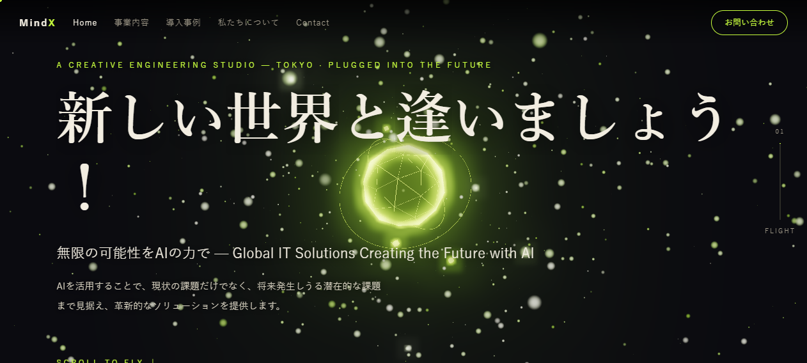
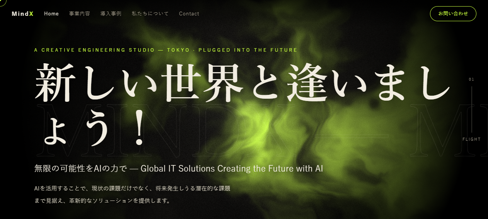
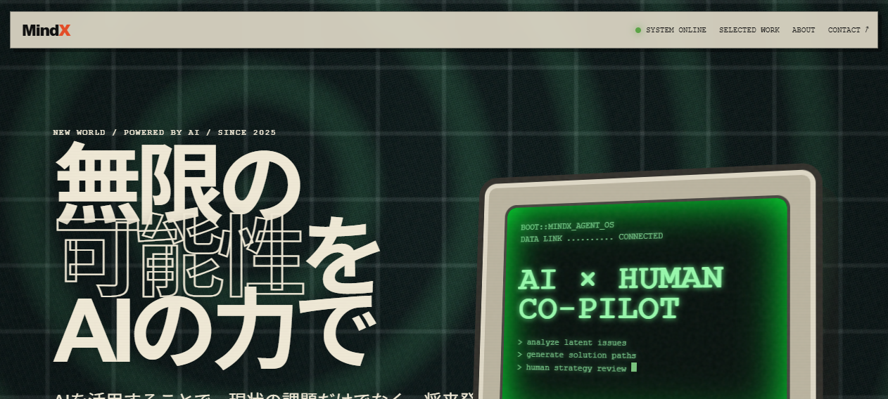

ROUTE 01● LIVE
Shader Flight — 3Dスクロール飛行
Three.js の3D世界をスクロールで flying through。事例を切り替えると世界ごと色が変わる、研究開発スタジオの顔。
Three.jsscroll-flightcarousel-morph
このサイトに入る →

ROUTE 02● LIVE
Shader Flight R2 — 星雲シェーダー
_FRAGMENT SHADER の星雲をまとった巨字明朝。同じ飛行テーマのもう一つの解釈、漆黒に燃える酸性グリーン。
fragment-shadernebulaeditorial
このサイトに入る →

ROUTE 03● LIVE
Shader GPU — 復古ターミナル
CRT の走査線と粒子ノイズ、起動ログが出る「AI × HUMAN CO-PILOT」。技術者の琴線に触れる一台。
retro-terminalscanlinesgrain
このサイトに入る →
ROUTE 04+○ COMING
Next Routes — 追加予定
owner が選んだ次の路線をここに追加します。1路線=1ディレクトリ=独立して更新・ rollback 可能。